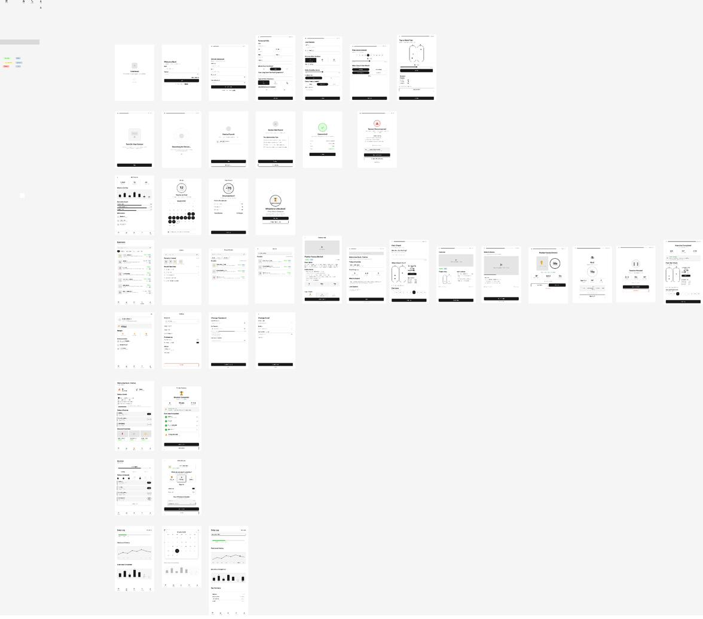
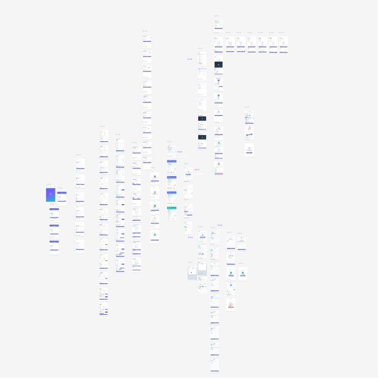
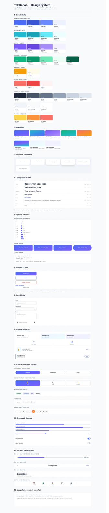
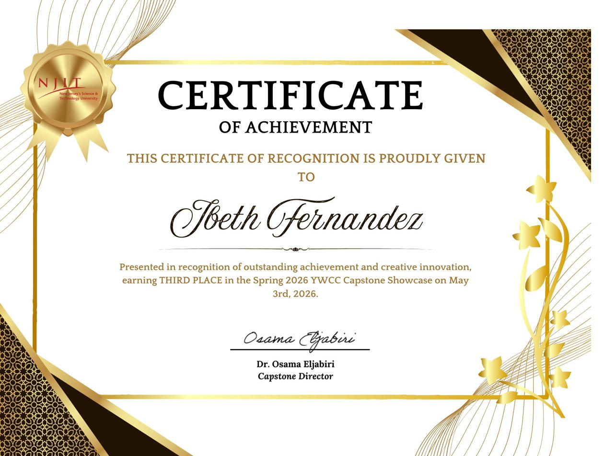

Stage 1Stage 01of 4 · Rehab app/ 04
TeleRehab
3rd place, YWCC Capstone Showcase
A tele-rehabilitation tablet app designed for construction workers managing plantar fasciitis. Workers stand on concrete 8+ hours a day; TeleRehab brings guided exercises, pain tracking and wearable sensor support directly to the job site.
- Figma
- UX design
- prototyping
- design system
- user flows
- accessibility
- Scrum
What I did
- Designed all 90+ interactive screens in Figma for iPad Pro (11″) across the entire application
- Designed the full design system: color palette, typography, component standards, spacing, and accessibility guidelines
- Designed for glove-friendly use with 48px touch targets throughout, including the interactive pain foot maps, sensor pairing sequences, and recovery-focused rewards
- Iterated on the designs with weekly sponsor feedback from Dr. Roni Barak Ventura (PID Lab) across the semester, as the sole designer on a 3-person Scrum team using GitHub Projects
- Led the Onboarding, Arduino Sensor Connection, and Gamification/Progress flows
- Developed user flows, low-fi wireframes, high-fi prototypes, and a 20+ page design documentation manual
More screens


Design process








3rd place, YWCC Capstone Showcase
Awarded for outstanding achievement and creative innovation at the Spring 2026 Capstone Showcase at New Jersey Institute of Technology. Presented TeleRehab, a tele-rehabilitation platform for construction workers, signed by Dr. Osama Eljabiri, Capstone Director.